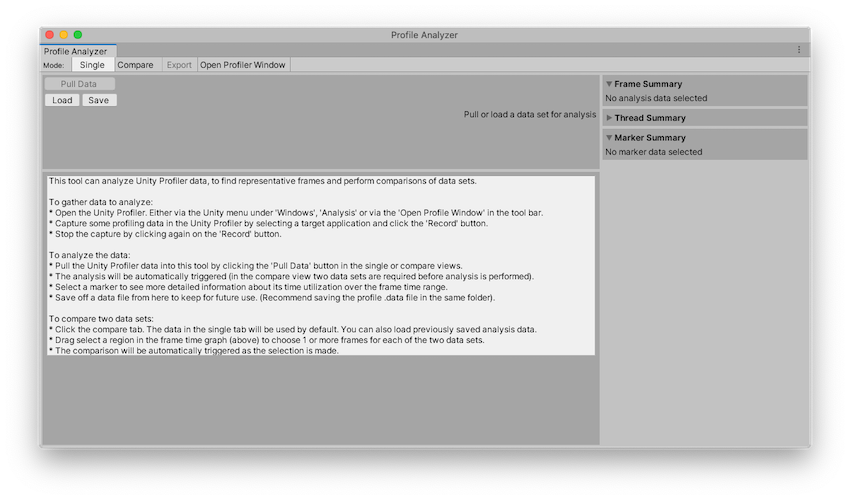

Profile Analyzer window¶
The Profile Analyzer window visualizes frame, thread, and marker data from the Unity Profiler window. You can use it to analyze the performance of specific markers, threads, and frames.
To open the Profile Analyzer window, in the Unity Editor go to menu: Window > Analysis > Profile Analyzer.

The Profile Analyzer window on start up, with no data loaded.
The Profile Analyzer has two views:
Single: The Single view displays one set of Profiler data. You can use this view to analyze specific events on one set of profiling data.
Compare: In the Compare view, you can load two sets of Profiler data to compare. You can use the Compare view to compare two different sets of profiling data, or to compare different events in the same data set.
In both views, the Profile Analyzer displays min, max, median, mean, and lower/upper quartile values of the selected frame range. It also displays information on the distribution of each profiler marker in histograms and box and whisker plots.
Pulling and analyzing performance data¶
The Profile Analyzer only analyzes CPU data. It can either analyze data from the active set of frames loaded into the Profiler, or from a saved Profile Analyzer .pdata file.
The Profile Analyzer aggregates the activity of each marker, and generates useful statistics to help you analyze the marker costs over a number of threads and frames. This includes summing the runtime and counts of each occurrence of every marker for all active threads and frames the Profile captured.
Pulling data from the Profiler window¶
To pull data from an active profiling session, click the Pull Data button. This pulls in the current set of available frames from the Profiler and visualizes the analyzed results.
If you don’t have an active profile session, click the Open Profiler Window button, then load or record some data.
Loading and saving a data set¶
You can save or reload any data that the Profile Analyzer analyzes at any point in time. This means you can share your analysis with others and load the results into the Single or Compare view at any time. To save the data from the Profile Analyzer, click the Save button in any view. This saves the data in the .pdata format. To load this data, click the Load button in any view.
[!NOTE] If you select the Load option, the data must be in the Profile Analyzer .pdata format. If you have data from the Profiler in the .data file format, open it in the Profiler first, and then select the Pull Data button in the Profile Analyzer.
For more information on how to pull data into the Profile Analyzer, see the workflow documentation on Collecting and viewing data.
Frame range selection¶
You can limit the analysis to a subset or selection of frames. To do this, you can click and drag on the chart in the Frame Control pane at the top of the Single and Compare views and select a range, or use the context menu commands to select a range. For more information on using the frame range pane, see the Frame Control pane documentation.
Filtering¶
You can also filter the data to limit the number of markers the Profile Analyzer displays. This includes filtering by thread, call depth and name substrings. You can order the remaining markers by any of the available metrics in the marker list control. For more information on how to use the filter system, see the Filters pane documentation.